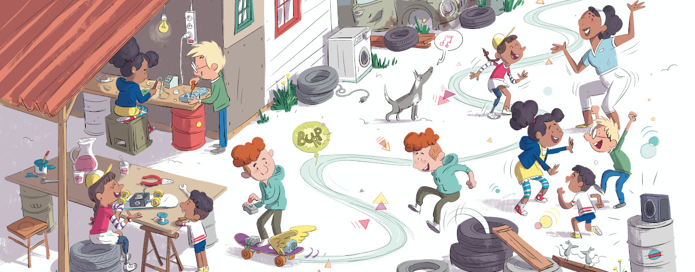

کتاب صوتی اِدا و زِنگمَن
داستان اِدا و زِنگمَن را بشنوید؛ مناسب کلاس، خانه و بلندخوانی. فایلها با فرمت آزاد Ogg Vorbis برای پخش آنلاین یا دانلود در دسترساند. نسخهٔ فارسی بهزودی اضافه میشود؛ فعلاً میتوانید نسخههای دیگر زبانها را گوش دهید.
نسخهٔ فارسی بهزودی
اطلاعات
- زبان: فارسی
- گوینده: اعلام میشود
- تهیهکننده: شیرازلینوکس (در دست آمادهسازی)
- فرمت: Ogg Vorbis (آزاد)
جای این نسخه برای مخاطب فارسیزبان رزرو شده است. بهمحض آماده شدن فایل صوتی، پخشکننده و لینک دانلود همینجا قرار میگیرد.
فایل صوتی فارسی هنوز آماده نیست.
بهزودی همینجا پخش و دانلود میشود.
نسخهٔ فرانسوی
اطلاعات
- گوینده: ارو لکرونیه
- تهیهکننده: انتشارات سیانداف (C&F)
- محل ضبط: استودیو دامنهٔ فوره
- تاریخ انتشار: (روز اِدا لاولیس)
نسخهٔ صوتی فرانسوی در منتشر شد؛ همزمان با روز اِدا لاولیس. اِدا لاولیس را اغلب نخستین برنامهنویس میدانند؛ در میانهٔ سدهٔ نوزدهم الگوریتمهایی برای ماشین چارلز ببیج نوشت. قهرمان داستان ما نیز به افتخار او اِدا نام گرفته است؛ یادآوری اینکه دختران جوان هم میتوانند رهبر دنیای فناوری باشند.
نسخهٔ آلمانی
اطلاعات
- گوینده: ماتیاس کیرشنر
- تهیهکننده: استودیو مونستروس
نسخهٔ انگلیسی
اطلاعات
- گوینده: جفری میتلمن
- تهیهکننده: استودیو مونستروس
نسخهٔ ایتالیایی
اطلاعات
- گویندگان: گابریله پونزو، سیمونه مازیلی، آنیتا ملونی، جینورا پونزو، ایرنه لوش، والنتیو گاتی، چچیلیا مورگانته، توماسو اونوفری، الیزا گابریلی
- تهیهکننده: اعلامنشده